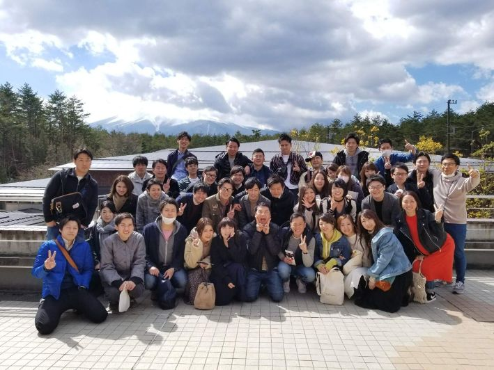
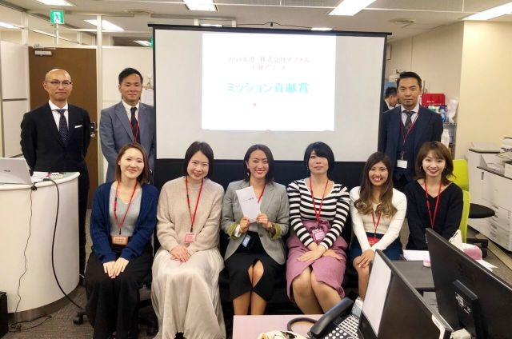
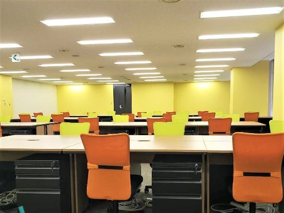
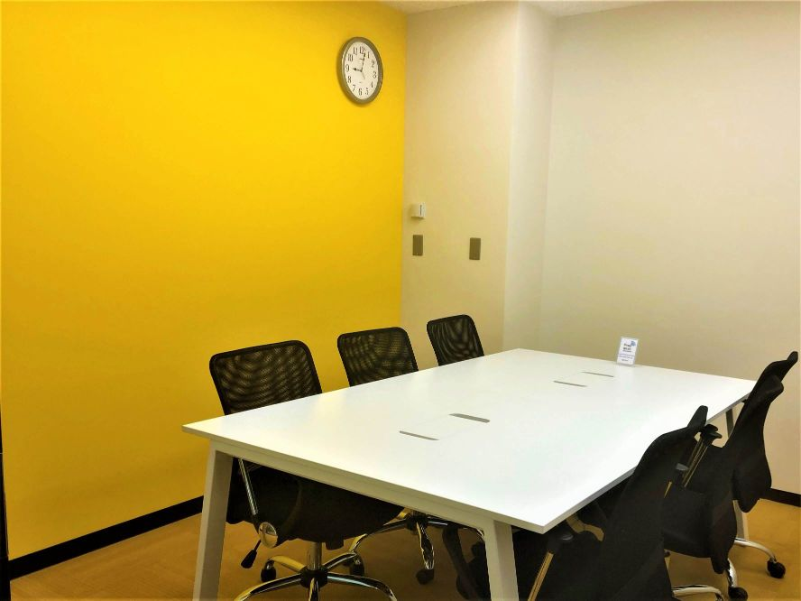

家事代行サービスを運営する
コンシューマー事業部の課長職に就いています。
AdvancedProductMarketingService
Recruitment
ABOUTアプメスについて知る
PEOPLEアプメスの人々
内野宮 理沙
2011年入社 コンシューマーサービス事業 課長
成長できたことは本当に数えきれないほどあると感じています。
奥山 梨加
2016年入社 コンシューマーサービス事業 事務
経験問わずやる気さえあれば楽しくお仕事ができる環境だと思います。
谷田川 翔太
2013年入社 セールスプロモーション事業 営業
アプメスには本当に仲間想いの人が多いです。不思議なほどにみんながみんな仲間想いです。
斎藤 憲秀
2015年入社 セールスプロモーション事業 主任
まだまだ成長過程の会社だからこそ、やる気さえあれば、なんでもチャレンジ出来ます。
小堀 英里子
2018年入社 ICTソリューション事業 営業事務
さまざまな仕事を任せてくれるので、遠慮しないで、常に自分に何ができるかを考えるようになりました。
加藤 枝里
2018年入社 全国推進部 関西支店 コーディネーター
アプメスはキャリアビジョンを全社員が把握することで組織が一丸となって同じ目標に向かって突き進んでいます。
岩佐 健弘
2013年入社 全国推進部 東海支店 支店長
同じ目標に向かってチームで意志を持って考えて行動していく事で自然と成長していける環境だと思います。
田中 靖子
2015年入社 人材派遣事業 主任
アプメスの社員は皆が向上心を持って働いており、毎日とても刺激的な環境です。
WORK PLACEアプメスの環境
CULTURE
カルチャー
安心できる福利厚生
飲みにケーション手当
アプメス社員同士で飲みに行った時に使える手当
社員の交流を深めるツールとして利用できます。
アプメス社員同士で飲みに行った時に使える手当
社員の交流を深めるツールとして利用できます。
健康増進手当
自身の健康を維持または増進するために使える手当
健康増進のためにスポーツジム、ヨガ、マッサージ等に利用できます。
自身の健康を維持または増進するために使える手当
健康増進のためにスポーツジム、ヨガ、マッサージ等に利用できます。
自己成長手当
資格取得や英会話に通うなど自己を成長させるために使える手当業務務遂行上必要とされるものが適用され、英会話や各種資格取得、ビジネス書等に利用できます。
資格取得や英会話に通うなど自己を成長させるために使える手当業務務遂行上必要とされるものが適用され、英会話や各種資格取得、ビジネス書等に利用できます。
全社イベント
3月6月10月12月に社内懇親会を行います。
実施例：バスツアー.BBQ.運動会.決起会納会
3月6月10月12月に社内懇親会を行います。
実施例：バスツアー.BBQ.運動会.決起会納会
産業医面談
社員が健康で快適な環境のもと、能力を十分に発揮して仕事に取り組めるよう、専属産業医との面談を実施しています。
社員が健康で快適な環境のもと、能力を十分に発揮して仕事に取り組めるよう、専属産業医との面談を実施しています。
オフィス内薬箱
頭痛薬や風邪薬社員が入った薬箱が社内に設置されており、無料で利用することができます。
頭痛薬や風邪薬社員が入った薬箱が社内に設置されており、無料で利用することができます。
EVENT
イベント
社員同士の交流を深めるための社内制度やイベントが多数あります。
運動会
玉入れ、綱引き、リレー、パターゴルフなど定番種目から変わり種目など大人の運動会を開催しました！もちろんみんな全力投球！

決起会・納会
決起会は表彰式などピシッと締めて、納会は年末を締めるお祭り騒ぎ！楽しく飲んでビンゴ大会をしたり、その年のお楽しみとして色々なことをしています！

バスツアー
2019年度は山梨へバスツアー☆大人のバスツアーとしてバス車内ではお酒も軽く飲みながら、お絵描き当てゲームなどで大盛り上がり！

初詣
毎年年明けに新年参拝にいきます！一年のお願いをして、おみくじを引いて新年も気持ちを一つにして励みます☆

BBQ・ボーリング大会
夏にはBBQとボーリング大会を開催！バーベキュー中に腕相撲大会を勝手にはじめてしまったりとワキアイアイ！
ビジネス運動会/内定式
チーム対抗！ビジネス基本をクイズ形式で回答、気付き力の大喜利大会になったりと結局わいわい楽しい会に☆夜はもちろん飲み会開催！


SYSTEM
評価・研修制度
社員同士の交流を深めるための社内制度やイベントが多数あります。
エンジニアの想像力を刺激する
デザインオフィス
豊富なアイデアから社会的意義のある新たなイノベーションが生まれます。
エントランス（本社神谷町）
打ち合わせオープンスペース。フリースペースなのでこちらで休憩することももちろんできます。

打ち合わせオープンスペース。フリースペースなのでこちらで休憩することももちろんできます。
オフィス内廊下。
経営理念、社是の紹介。

神谷町本社の執務室。POPなカラーで解放感のあるデザイン。
研修室/打合せスペース。ブルーを基調としたお部屋。

会議室/打合せスペース。グリーンを基調としたお部屋。

会議室/打合せスペース。イエローを基調としたお部屋。
会議室/打合せスペース。オレンジを基調としたお部屋。
INFORMATION
採用情報
| 募集職種 | 営業職・事務職・販売職・コーディネーター・人事・経理・総務（総合職） |
|---|---|
| 給与 | 月給20万円～35万円 インセンティブ(配属部署によりことなる) |
| 昇給 | 年1回 |
| 賞与 | 年2回 |
| 勤務地 | 各事業所（東京、大阪、名古屋、北海道） プロジェクト先により異なる |
| 勤務時間 | 9：00-18：00 10：00-19：00 (実働8時間)配属先により異なる |
| 諸手当 | 交通費支給(月額5万円上限)、時間外手当(みなし残業超過分)、役職手当、達成インセンティブ |
| 福利厚生 | 社会保険完備(雇用・労災・健康・厚生年金)健康増進手当、飲みにケーション手当、自己成長、携帯･PC支給 |
| 休日休暇 | 週休2日制※事業部、部署によって変動 年末年始休暇、夏季休暇、有給休暇、慶弔休暇、特別休暇 |